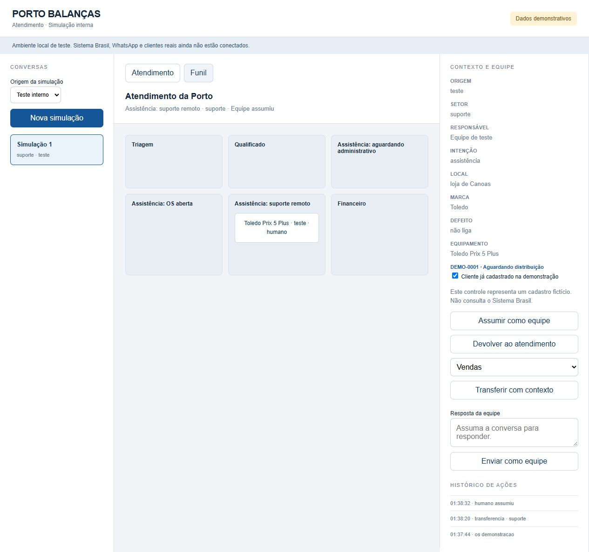

Conversa e funil juntos
Quem atende vê a conversa e o funil na mesma tela, sem preencher ficha à mão.
Transferir com contexto
Ao mandar pra vendas, assistência ou financeiro, vai o resumo e o responsável. O cliente não repete tudo.
Equipe assumiu, a IA para
Quando alguém da equipe responde, o atendimento automático fica em silêncio naquela conversa até devolverem.
O que já aparece na simulação e o que falta ligar
Separamos com honestidade. O que está verde já funciona na simulação que a gente rodou. O que está em âmbar depende de ligar no Sistema Brasil e no WhatsApp, e só entra depois de testado contigo.
Receber o cliente numa conversa natural, aproveitando o que ele já disse
Uma pergunta por vez, sem menu e sem botões.
Entender o que ele quer: compra ou assistência
Compra pergunta aplicação, peso e quantidade. Assistência pega equipamento, defeito e local, e pede confirmação antes de abrir.
Encaminhar pro setor certo com resumo e responsável
Vendas, assistência, suporte remoto e financeiro.
Funil dentro da tela de atendimento
Triagem, qualificado, assistência e financeiro.
Humano assume e o automático para
E volta só quando a equipe devolver.
Reconhecer o cadastro do cliente no Sistema Brasil
Hoje o cadastro é de mentira, só pra mostrar o caminho. Ligamos numa empresa de teste do Sistema Brasil antes de qualquer dado real.
Abrir e consultar OS de verdade
Na simulação aparece uma OS de demonstração. A OS real só é anunciada ao cliente depois que o Sistema Brasil confirmar que abriu.
WhatsApp, áudio e foto
Vamos reservar um número só pro teste, sem mexer no número público da Porto.
Em etapas, sem cliente real até tu aprovar
Cada etapa só começa depois que a anterior foi validada contigo, com os casos reais da Porto.
Prévia e simulação
É o que tu está vendo. Tu aponta o que ajustar e a gente libera um acesso pra tu testar sozinha.
Ligar no Sistema Brasil de teste
Cadastro, OS e pedidos de uma empresa de teste, sem tocar nos dados reais.
Número de teste e equipe
A equipe da Porto testa com o número reservado e as regras do jeito que vocês trabalham.
Clientes reais
Só quando tu disser. Contatos e conversas em andamento a gente combina o que dá pra trazer.
Quatro informações pra avançar
- Um número reservado pro testeSeparado do número público da Porto, que continua como está.
- A equipe de hojeQuem atende vendas, assistência, suporte remoto e financeiro, e quem é o administrativo que faz o primeiro contato de cliente novo.
- Horários e ausênciasPra saber pra quem encaminhar em cada horário e o que fazer fora do expediente.
- As regras que são da PortoQuando retomar um contato parado e o que a automação nunca decide sozinha, como preço, desconto e crédito.
Tu decide o ritmo
Nada vai pra cliente da Porto sem a tua aprovação. Se algo da simulação não bater com o jeito que vocês trabalham, a gente ajusta antes de ligar qualquer coisa.